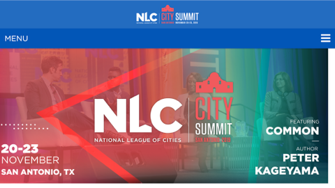

Council Member Trips- Who is Paying?
Last week, we talked about budget and the current financial crisis that we are in. An important consideration in these types of times is transparency, especially given our obligation as council members to the public. It is important that the people know that all money spent is catered to improving the needs and services of our constituents. In this spirit, I wanted to comment on the idea of outside trips by council members and how payments for these types of experiences work
Some of my colleagues on the Council and I attended the National League of Cities (NLC) Summit in San Antonio. NLC is a convention for locally elected and appointed officials across the country. This year’s conference was attended by members from all fifty states with over 4,000 individuals in attendance. With sessions on affordable housing, transportation, economic development, youth and racial equity, the conference left me with a lot to think about. Council Member Delishia Porterfield and I even had the rare opportunity to interview a San Antonio cop with a body camera. Because many other cities and states across the country are grappling with the same issues as Nashville, the conference provided a unique opportunity to collaborate and learn from one another regarding solutions and best practices.

Who is paying for the trip?
Council members are responsible for 100% upfront cost of their trips. However, council members may choose to be reimbursed using a $750 annual stipend from Metro. It is important to NOTE that three important decisions related to council travel stipends and the budget were made over the years.
Firstly, the travel budget have been cut drastically over the years.
Secondly, council members must pay for their trips upfront.
Thirdly, Metro will only reimburse council members a maximum of $750 per council member, per year.
This means that once a council member exhausts the $750, they are 100% financially responsible for all additional trip expenses. For me, the upfront cost of the trip to the National League of Cities (NLC) Summit in San Antonio was $1526. With the $750 reimbursement from Metro, I was reimbursed for 49% of the costs and I paid the remaining 51% out of pocket.
Is the stipend a good use of taxpayer dollars?
Does it make sense for Metro to provide partial reimbursements to council members annually for business and political trips, especially considering the present issues with the budget? In my opinion, yes. While the stipends make up a marginal portion, .0003% of the general fund, the stipend provides many benefits and opportunities that aid the Council in performing their roles with ultimate effectiveness.
Training is Critical
Education and training are vital components of any job. This rings true for the role of a council-member and other elected officials as well. As representatives for the people, it is essential for us to learn best practices from our peers and colleagues. Having the opportunity to hear directly from other local officials in terms of initiatives they undertook and problems they are working through aids us in thinking creatively to adapt solutions to the city of Nashville so that we can best serve our constituents.
It Can Help Promote Diversity and Access
The support of the stipend enables all council-members, and by-proxy, all districts to have a voice within a national setting. Without the financial stipend, many council-members may not be able to subsidize the costs of these national conferences on their own. The reimbursement from Metro helps to make it possible for all council-members to receive critical training and forge significant partnerships and connections across the country. Without the stipend, these important experiences could be spread unevenly, favoring council-members who have greater flexibility within their personal finances.
Impact on Future Elections
If it is assumed that all council-members should pay for 100% of their business and political expenses, it is likely that Metro’s elections would become less diverse. People unable to afford these kinds of trips on their own may neglect to run altogether. Diverse representation on the council means ensuring that the office is accessible to people of all backgrounds and walks of life.
As we discuss the current state of metro finances, it is important for taxpayers to know that council members are willing to and are spending out of pocket to get the training we need to do the job we are elected to do.
We have a lot of work to do on the budget and we need your patience and trust that we will do what is best. To ask for your trust requires that we must earn it. And a big step in earning that trust is via open and honest communication.
As always, I welcome your comments, thoughts and questions.